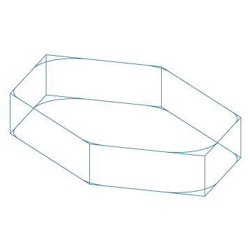

| Object: GLOBAL-FILLETED-POLYGON-PROJECTION (The :GEOM-BASE Package) |
| Mixins: GLOBAL-POLYGON-PROJECTION |
| Input Slots (required) | |
| PROJECTION-DEPTH [from GLOBAL-POLYGON-PROJECTION] number | |
The resultant distance from the two end faces of the extrusion. | |
| VERTEX-LIST [from GLOBAL-POLYGON-PROJECTION] list of 3d points | |
The vertex list making up the polyline, same as the input for global-polyline. | |
| Input Slots (optional) | |
| DEFAULT-RADIUS number | |
Specifies a radius to use for all vertices. Radius-list will take precedence over this. | |
| HIDDEN? [from VANILLA-MIXIN*] boolean | |
Indicates whether the object should effectively be a hidden-object even if specified in :objects. Default is nil. | |
| IMAGE-FILE [from BASE-OBJECT] pathname or string | |
Points to a pre-existing image file to be displayed instead of actual geometry for this object. Defaults to nil | |
| LOCAL-BOX [from BASE-OBJECT] list of two 3d points | |
The left front bottom and right rear top corners, in global coordinates, of the rectangular volume bounding this geometric object. | |
| OBLIQUENESS [from BASE-OBJECT] 3x3 orthonormal matrix of double-float numbers | |
This is synonymous with the orientation. | |
| OFFSET [from GLOBAL-POLYGON-PROJECTION] keyword symbol | |
The direction of extrusion with respect to the vertices in vertex-list and the projection-vector:
| |
| ONCLICK-FUNCTION [from BASE-OBJECT] lambda function of zero arguments, or nil | |
If non-nil, this function gets invoked when the user clicks the object in graphics front-ends which support this functionality, e.g. SVG/Raphael and X3DOM. | |
| PROJECTION-VECTOR [from GLOBAL-POLYGON-PROJECTION] 3d vector | |
Indicates the straight path along which the extrusion should occur. | |
| RADIUS-LIST list of numbers | |
Specifies the radius for each vertex (``corner'') of the filleted-polyline. | |
| ROOT [from VANILLA-MIXIN*] gdl instance | |
The root-level node in this object's ``tree'' (instance hierarchy). | |
| SAFE-CHILDREN [from VANILLA-MIXIN*] list of gdl instances | |
All objects from the :objects specification, including elements of sequences as flat lists. Any children which throw errors come back as a plist with error information | |
| STRINGS-FOR-DISPLAY [from VANILLA-MIXIN*] string or list of strings | |
Determines how the name of objects of this type will be printed in most places. This defaults to the name-for-display (generally the part's name as specified in its parent), followed by an index number if the part is an element of a sequence. | |
| VISIBLE-CHILDREN [from VANILLA-MIXIN*] list of gdl instances | |
Additional objects to display in Tatu tree. Typically this would be a subset of hidden-children. Defaults to NIL. | |
| Input Slots (optional, defaulting) | |
| CENTER [from BASE-OBJECT] 3d point | |
Indicates in global coordinates where the center of the reference box of this object should be located. | |
| DISPLAY-CONTROLS [from BASE-OBJECT] plist | |
May contain keywords and values indicating display characteristics for this object. The following keywords are recognized currently:
| |
| HEIGHT [from BASE-OBJECT] number | |
Z-axis dimension of the reference box. Defaults to zero. | |
| LENGTH [from BASE-OBJECT] number | |
Y-axis dimension of the reference box. Defaults to zero. | |
| ORIENTATION [from BASE-OBJECT] 3x3 matrix of double-float numbers | |
Indicates the absolute Rotation Matrix used to create the coordinate system of this object. This matrix is given in absolute terms (i.e. with respect to the root's orientation), and is generally created with the alignment function. It should be an orthonormal matrix, meaning each row is a vector with a magnitude of one (1.0). | |
| WIDTH [from BASE-OBJECT] number | |
X-axis dimension of the reference box. Defaults to zero. | |
(in-package :gdl-user)
(define-object global-filleted-polygon-projection-sample
(global-filleted-polygon-projection)
:computed-slots
((display-controls (list :color :blue-steel
:transparency 0.3
:shininess 0.7
:spectral-color :white))
(default-radius 5)
(projection-depth 5)
(vertex-list (list (make-point 0 0 0)
(make-point 10 10 0)
(make-point 30 10 0)
(make-point 40 0 0)
(make-point 30 -10 0)
(make-point 10 -10 0)
(make-point 0 0 0)))))
(generate-sample-drawing :objects
(make-object 'global-filleted-polygon-projection-sample)
:projection-direction :trimetric)
|  |